THE COLLAGES
SAM 3 was asked sixteen noun phrases of every shot in the archive and returned 2033 elements across 129 shots, each cut out on transparency with twenty-four measurements attached. Until now nothing in this project had ever crossed between two shots — the grammar cuts between frames, and even the blend modes only split one rectangle in two. These are the first pictures made of pieces that never shared a frame.
Nothing is scaled, rotated or repositioned. Each element sits exactly where it was found, because where a thing sat is a measurement and moving it would be composition. Overlap falls where the archive put it.
THE ACCUMULATION — a collage assembling on the drone's beat
Elements arrive one per 0.79920s, the pulse measured underneath every one of the poet's recordings — the pulse he himself is not following. Ninety-nine faces from sixty-nine shots average into one face belonging to nobody; watching it arrive a person at a time is a different fact than seeing it finished.
BY NOUN — sixteen
Lights, skies and neon are composited onto night and keep whichever pixel is brightest. Bodies and rooms are composited onto paper as an alpha-weighted mean, so density becomes visible rather than the darkest element winning.
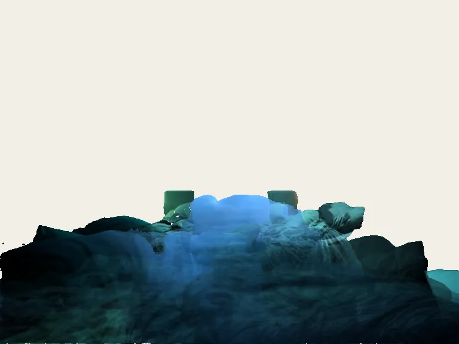
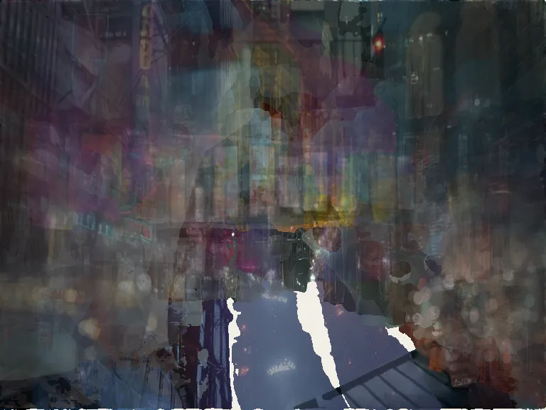
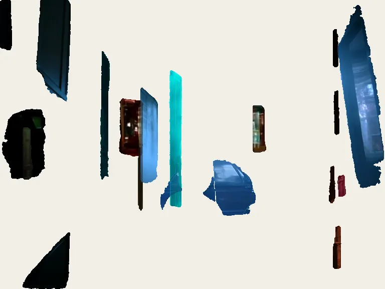
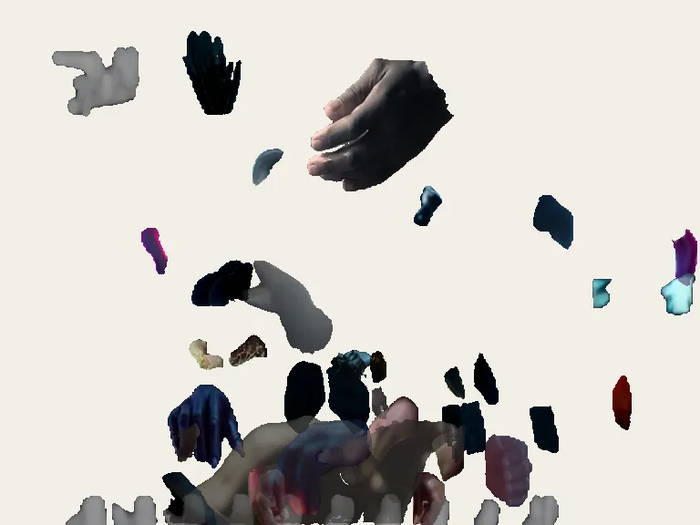
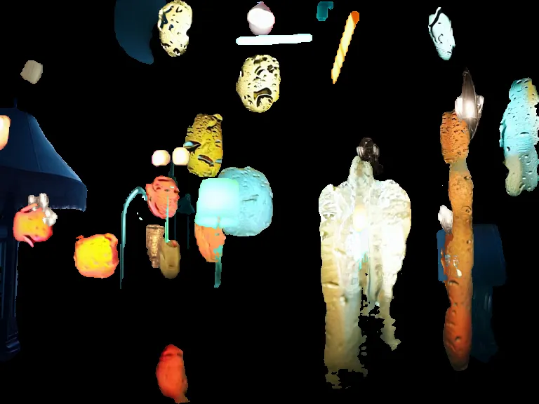
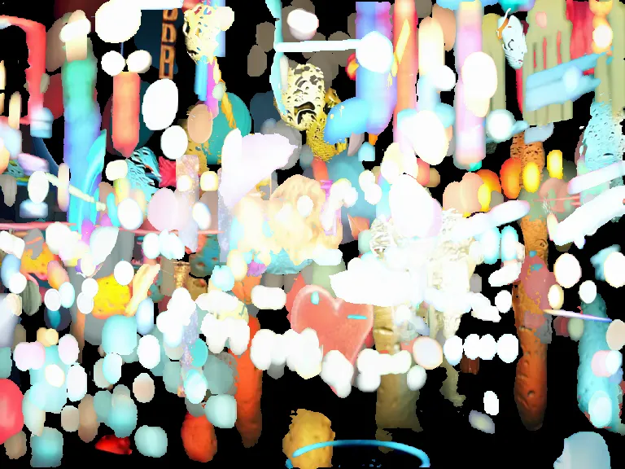
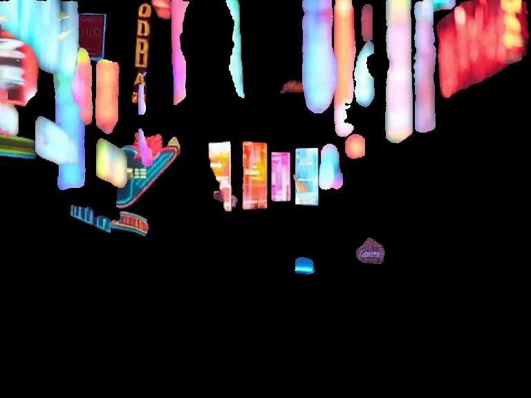
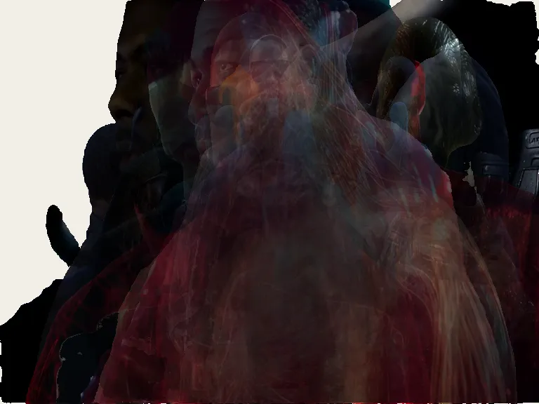
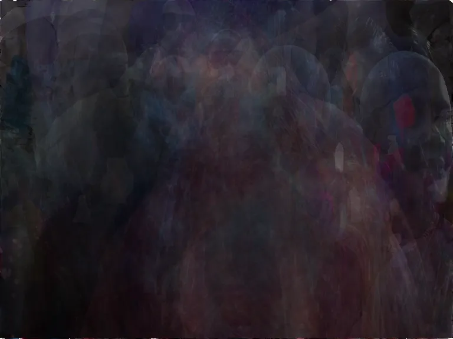
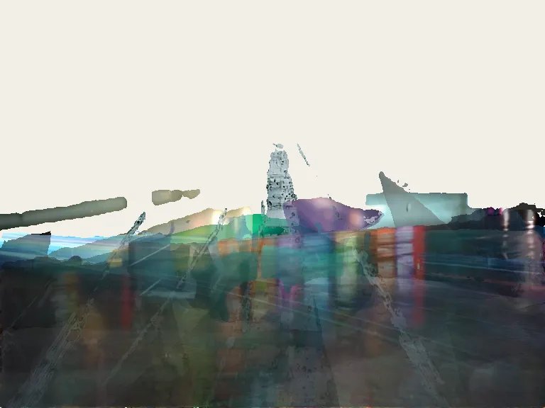
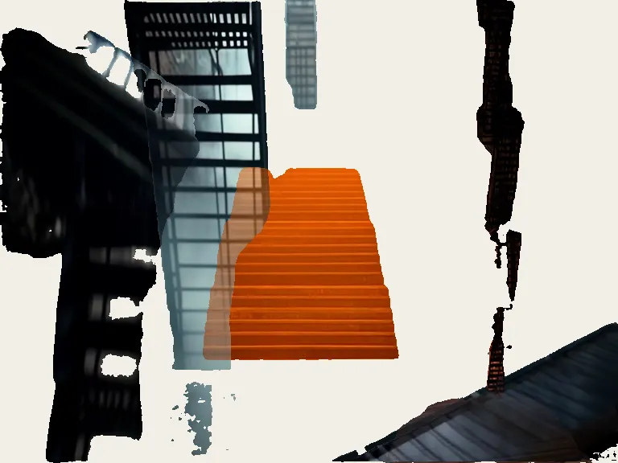
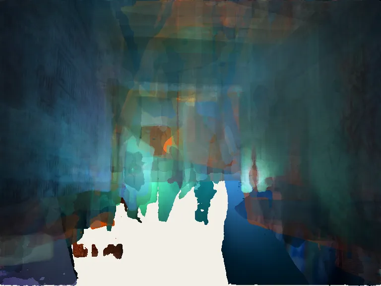
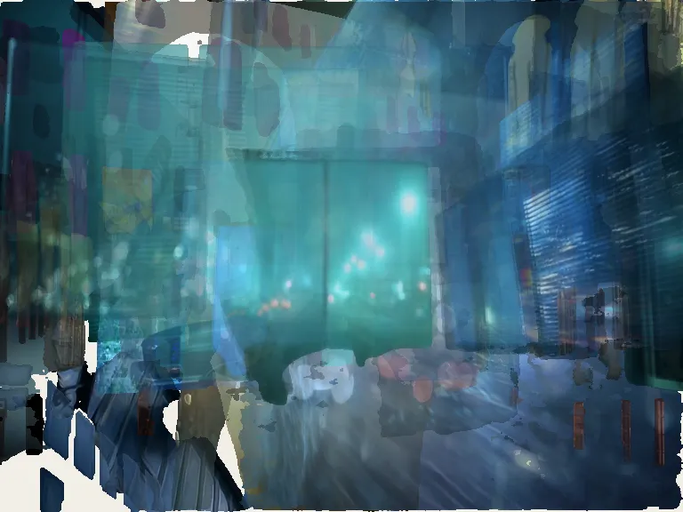
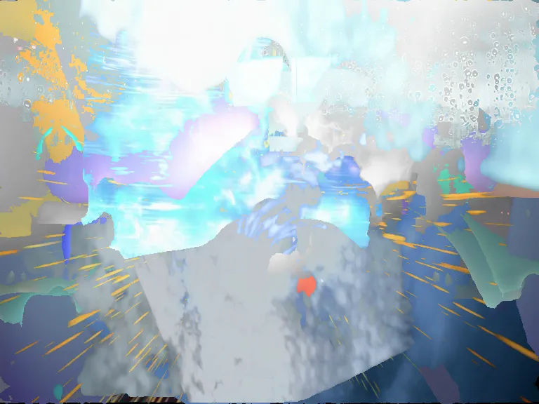
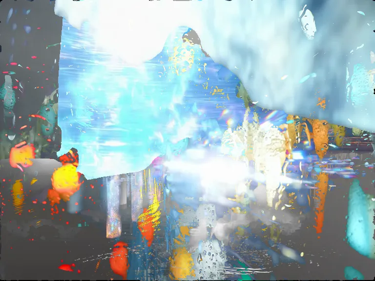
BY POEM — fourteen


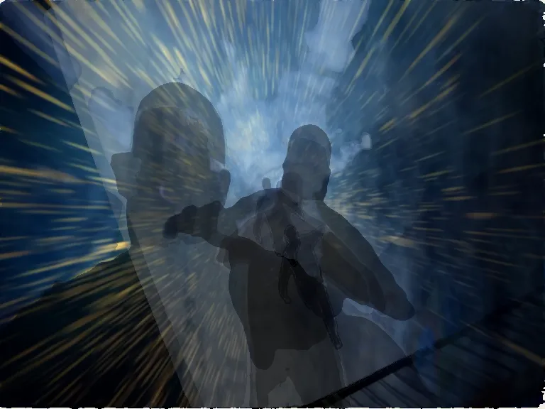
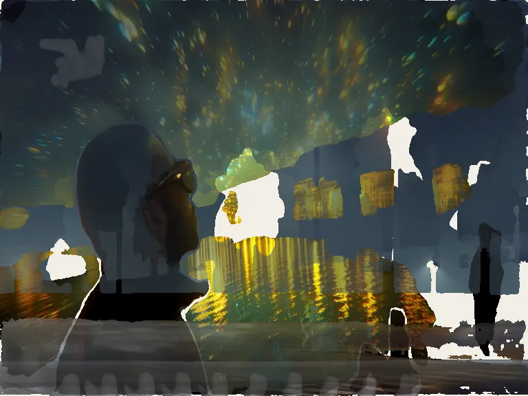
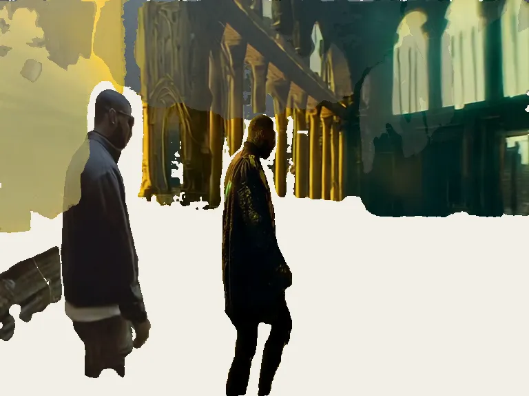
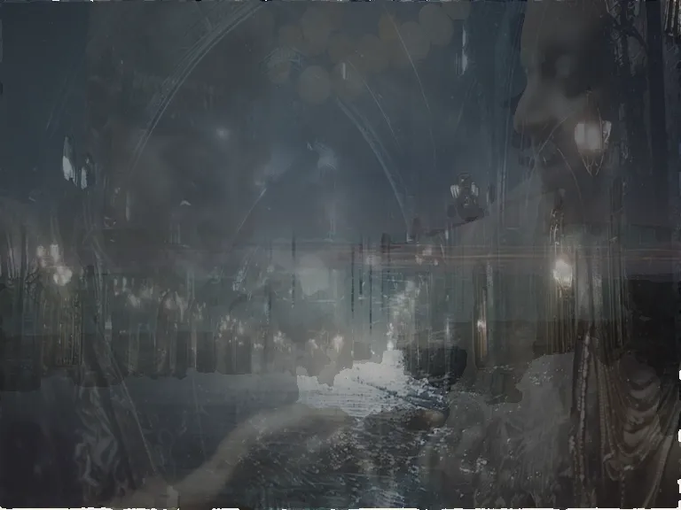
ALL 2033 AT ONCE
Sorted by outline complexity — a number that fell out of the measurement pass and has never been used for anything.